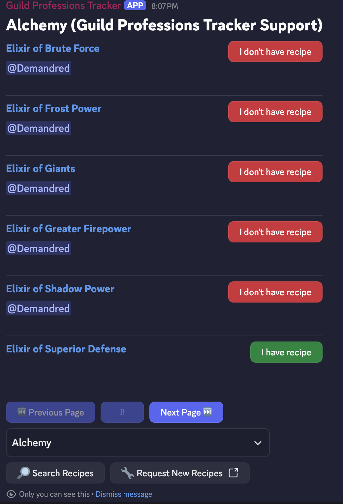

WoW Guild Professions Tracker
Installation and Usage
Use this link to install the bot onto your server: https://discord.com/oauth2/authorize?client_id=1377491013677092970
Create a channel and type !wowgpt to initialize the main screen for the bot.

Click any of the buttons and the bot will DM you and allow you to mark your recipes for the Discord server.

Frequently Asked Questions
- Do I need to set my recipes for every server that I'm on?
Yes. Because a server usually signifies a guild, your recipe data is stored per server. This allows the same Discord account to have recipes for multiple factions and WoW servers!
Privacy Policy
https://wow-gpt.github.io/docs/privacy.html
Terms of Service
https://wow-gpt.github.io/docs/tos.html